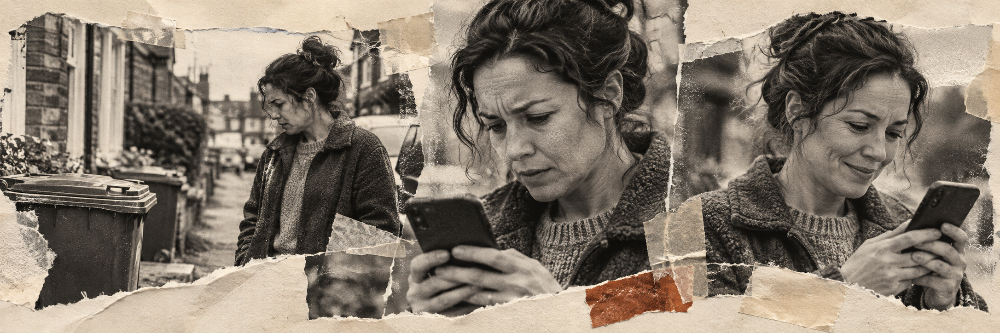
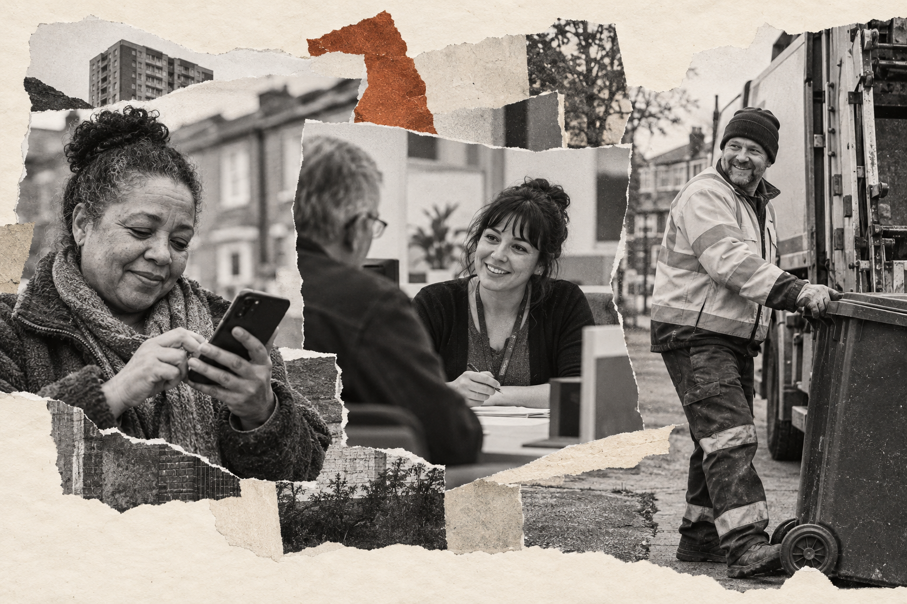
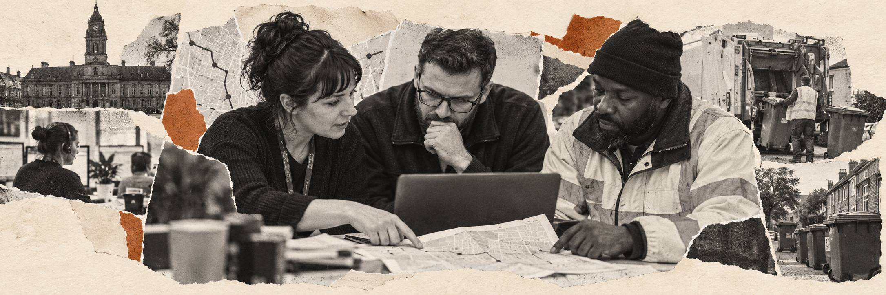

Something’s wrong
The collection has not happened. The resident checks the street and their bin.
One service · three useful views
A resident needs a clear next step. A senior stakeholder needs to see the experience and the service-level opportunity. A delivery team needs the handoffs, systems, rules and failure paths. The artefact changes because the decision changes.
Illustrative example only · hypothetical missed-bin report · not a recovered Richmond service flow
01 / For residents and the public
A plain-language journey makes the experience recognisable before it introduces the machinery behind it. It can be shared with residents, frontline teams and stakeholders to check whether the story rings true.

The collection has not happened. The resident checks the street and their bin.
They look for collection guidance and try to work out whether to wait or report it.
They provide an address and describe what happened, using the available route.
They need to understand whether the report was received and what to expect next.
The issue is resolved, or the resident needs a clear route to ask again.
Annotation: “The service feels uncertain before the resident knows whether to wait, report or follow up.” This points to a content and status question without assuming which operational team caused the missed collection.
02 / For stakeholders and decision-makers
This view is deliberately visual and selective. It helps a mixed audience discuss the resident need, the public-facing promise and the teams that need to work together, without asking them to decode technical notation.

Stakeholder service picture
At a glance, this frames the service around a resident’s uncertainty, then shows where public information, customer contact and collection operations meet. Use imagery to orient the room; keep the evidence and unknowns close by.
Decision prompt: “Where should ownership sit when the normal collection route cannot resolve the report?” The picture invites the conversation; the delivery blueprint records the answer.
03 / For engineers, developers and operations
The detailed blueprint keeps the resident-facing story at the top, then traces the supporting work underneath. It makes handoffs and technology dependencies discussable, including the situations where the happy path breaks.

Technical annotation: “The case status, operational outcome and resident update need a shared definition. If the crew’s completion signal does not reach the case record, the interface cannot safely promise resolution.” Confirm the actual systems, rules, owners and exception paths with service teams before treating this as a build specification.
The storytelling move
Start with the resident’s experience. Use the visual stakeholder view to align people on the opportunity. Then open the detailed blueprint to show that the service can be designed through the operational and technical joins.
Plain language, emotional context, clear next step.
Visual service picture, key relationships, decision prompt.
Handoffs, systems, data, rules, exceptions and ownership.